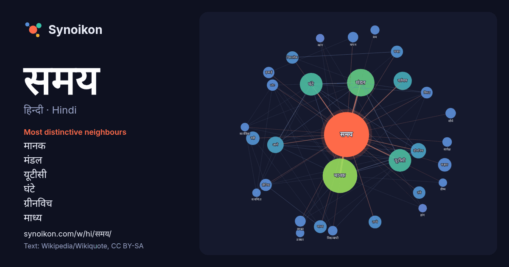

हिन्दी · Hindi · word of the day list
समय
“time” · The words found around it in 1470 instances from Hindi Wikipedia, Wikiquote.

Most distinctive neighbours
- मानक 70×
- मंडल 57×
- यूटीसी 52×
- घंटे 29×
- ग्रीनविच 26×
- माध्य 18×
- दिवालोक 18×
- सहारा 17×
- ग्रीनिच 17×
- बचत 15×
- लम्बे 15×
- utc 15×
- सौर्य 13×
- मण्डल 12×
- मापन 11×
- लंबे 11×
- सही 11×
- वर्तमान 10×
- विश्वव्यापी 10×
- इकाई 9.9×
× = how many times more often than in general Hindi Wikipedia text.
Most frequent neighbours
- मानक 132
- मंडल 83
- घंटे 57
- यूटीसी 56
- भारत 45
- वर्तमान 37
- क्षेत्र 33
- अनुसार 30
- आगे 30
- ग्रीनविच 26
- दिन 26
- उपयोग 25
- सहारा 20
- सही 20
- काम 19
- माध्य 18
- लम्बे 18
- अधिक 17
- दिवालोक 17
- पीछे 17
In context
- समय एक भौतिक राशि है। जब समय बीतता है, तब घटनाएँ घटित होती हैं तथा चलबिंदु स्थानांतरित होते हैं। इसलिए लगातार दो घटनाओं के होने अथवा किसी गतिशील बिंदु Wikipedia snippets · समय
- समय मण्डल पृथ्वी के ऐसे क्षेत्र हैं जहाँ पर समय का एक सा मानकीकरण कर दिया गया है। ये सारे क्षेत्र अपने स्थानीय समय को ग्रीनिच माध्य समय (ग्रीनविच मानक Wikipedia snippets · समय मण्डल
- भारतीय मानक समय भारत का समय मण्डल है, एक यूटीसी+5:30 समय ऑफ़सेट के साथ में। भारत में दिवालोक बचत समय (डीएसटी) या अन्य कोइ मौसमी समायोग नहीं है, यद्यपि Wikipedia snippets · भारतीय मानक समय
- पाकिस्तान में समय पाकिस्तान मानक समय द्वारा दिया जाता है। पाकिस्तानी मानक समय Wikipedia snippets · पाकिस्तान में समय
- मानक समय (NPT) नेपाल का समय मण्डल है। यह ग्रीनविच मानक समय से ५ घंटे ४५ मिनट आगे रहता है। काठमांडू यूटीसी से ५ घंटे ४१ मिनट आगे है। नेपाल मानक समय इसका Wikipedia snippets · नेपाल मानक समय
- द्वीपसमूह चार समय मंडलों ऐकेह में यूटीसी+०६:०० से पश्चिमी पापुआ में यूटीसी+०९:०० तक फैला हुआ है। हालांकि यहाम्ं की सरकार आधिकारिक रूप से सिर्फ़ तीन समय मंडलों Wikipedia snippets · इंडोनेशिया में समय
- ग्रीनिच वेधशाला के माध्य सौर समय को ग्रीनिच माध्य समय माना गया है। यह वहाँ की मध्यरात्रि से आरम्भ होता है (अर्थात मध्यरात्रि को समय = ०) । किन्तु पहले यह मध्याह्न Wikipedia snippets · ग्रीनिच माध्य समय
- (संक्षिप्ताक्षर – UTC), समय का वह प्राथमिक मानक है जिससे विश्व का समय और घड़ियाँ नियमित होतीं हैं। यह समय, शून्य अंश की देशान्तर रेखा के माध्य सौर समय के बराबर होता Wikipedia snippets · सार्व निर्देशांकित काल
More Hindi words
- इतिहास
- ईश्वर
- कार्य
- कुत्ता
- गर्मी
- गाना
- घंटी
- घड़ी
- घोड़ा
- चाय
- चित्रकला
- छाया
- जंगल
- जलवायु
- जीवन
- तूफ़ान
- दर्पण
- द्वीप
- नक्षत्र
- नमक
- परिवार
- पहाड़
- पानी
- पैसा
- प्रकृति
- बगीचा
- बिल्ली
- भाषा
- भोजन
- माता
- मानचित्र
- मृत्यु
- मौन
- रेगिस्तान
- रेलगाड़ी
- रोटी
- वर्षा
- विज्ञान
- शक्ति
- शरद
- शहद
- शहर
- सड़क
- सत्य
- सर्दी
- सेतु
- स्वर्ण
- स्वास्थ्य
- हृदय
Precomputed on 2026-10-09 with default settings (±5 words, medium corpus). The interactive map can refresh it with live data.